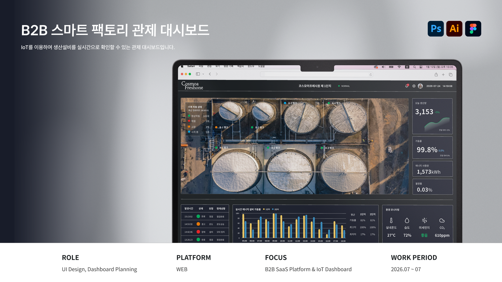

IoT 스마트 팩토리 관제 대시보드

프로젝트 개요
프로젝트 목표
작업의 효율성을 높이기 위해 공장 설비 사용자가 생산 현황, 설비 상태, 환경 데이터를 각각 확인하는 것이 아닌 실시간으로 하나의 화면으로 통합하여 전체 운영 현황을 한눈에 파악할 수 있도록 효율적인 업무환경 제공을 목표로 한다.
디자인 목표
공장 전체와 설비 이상 상태 발생 시 문제를 빠르게 확인할 수 있도록 직관적인 UI설계와 디자인 시스템을 구축하여 사용자에게 필요한 정보를 단계적으로 확인할 수 있도록 한다.
프로젝트 타입
작업 효율성을 높이기 위하여 한 화면에서 공장 설비 상태를 통합적으로 확인하고, 변화 추이를 확인할 수 있는 IoT시설 운영 플랫폼
프로젝트 유형
WEB UI Design, Dashboard Concept Proposal, Design Guide
제작 방향

>IoT 특성상 다양한 설비와 센서 데이터가 동시에 발생하기 때문에 모든 정보를 동일 비중으로 보여주기보다 전체 현황 → 주요 데이터 → 설비 상세 순서로 필요한 정보를 단계적으로 확인할 수 있도록 제작되었습니다.
핵심 화면
>IoT 특성상 다양한 설비와 센서 데이터가 동시에 발생하기 때문에 모든 정보를 동일 비중으로 보여주기보다 전체 현황 → 주요 데이터 → 설비 상세 순서로 필요한 정보를 단계적으로 확인할 수 있도록 제작되었습니다.
상세 프로젝트 보기
*AI학습·무단 전재·복제 및 외부 배포를 금합니다.


© 2026 Leesujin. All rights reserved.